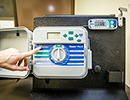
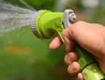
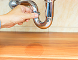
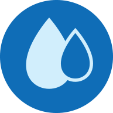
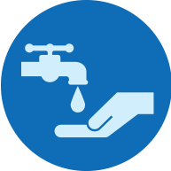
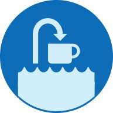

Facing New Challenges Together
Over the past year, my first serving you as General Manager, we've seen some incredible changes, both in our community and the water industry. The much-anticipated El Niño generated excitement and some fuller reservoirs in Northern California, but did not end our historic drought. The costs to provide water throughout the state are increasing dramatically, as strict new environmental requirements and water quality standards create the need for new infrastructure and treatment. The importance of water to our lifestyle and economy has never been clearer.
Tackling these challenges together with you, our customers, is more important than ever. And you have answered the call, achieving unprecedented levels of conservation, and making meaningful changes to the way you use precious water resources. Driving around Palm Springs and Cathedral City, I've noticed more and more desert landscaping. I am proud that this is due in part to our turf buy back grant program. We hope that this program and others like it have a snowball effect. Offering information and rebates to help save water is one important way we will continue to serve customers.
While conservation is always a focus, it is only part of what we do here at Desert Water. Our most important job is to serve you high-quality water that you can depend on every time you turn on the tap. Our team is on call around the clock, seven days a week to ensure the safety and reliability of your supply.
We are charged with maintaining a system that has little room for error. While our agency and our customers have made investments in the right infrastructure for our region, many of our pipelines are older than the average
Palm Springs resident. Fixing and replacing older pipelines and operating in a highly regulated state, all at a time when we are selling less water, creates financial challenges, but it is essential to the long-term viability of Desert Water. While we operate and maintain this system, it belongs to you, our customer. Continuing to invest in it will help ensure that we leave the next generation with the same opportunity to thrive.
Serving as stewards of your local supply is also essential to protecting this opportunity. For years, the Coachella Valley has been blessed with an aquifer filled with healthy water that requires only a touch of chlorine before delivery. Our aquifer has not seen declines in the face of the severe drought, thanks to groundwater replenishment efforts that protect the health of our groundwater basin and help secure your future supply. Imported water plays a key role in our system now, and will for years to come.
As we head into the future, we will work to balance the needs of our community and protect our most precious resource. We encourage you to engage with us at our bimonthly public meetings, on social media, by phone or even at our offices.
Hearing what matters to our community helps us serve you better. It is our privilege to provide you this service.
Mark S. Krause
General Manager and Chief Engineer
Desert Water Agency Year at a Glance
Your Water Quality
Desert Water Agency is committed to serving healthy, safe drinking water and to keeping our community informed about the quality of the water that is delivered to your tap. Our dedicated staff samples water daily to ensure that it meets all standards. As drought conditions in California continue to affect water supply, it is important for us to support our customers and work together to protect this precious local resource.
From explaining the sources of our water, to listing and defining the constituents in the water, this report is our way of providing clear, transparent information to our customers. To make going through our report easier for customers, we've included informational videos; we hope that you enjoy them. The board and staff of DWA take their responsibility to provide high-quality water very seriously and we're proud to report that our water meets and beats the strictest standards in the nation. If you have any questions when reviewing this report, please contact Beth Amheiser, laboratory director, at (760) 323-4971 ext. 169.
Our Water Supply
Desert Water Agency
Established in 1961, Desert Water Agency (DWA) is a public nonprofit agency and State Water Contractor serving residents and visitors in a 325-square-mile area that includes parts of Cathedral City, Palm Springs, and Desert Hot Springs, as well as some unincorporated areas of Riverside County. The Agency's responsibility is to provide a safe, reliable water supply to its service area while protecting its interests in the State Water Project. DWA's ratepayers are represented by a five-member elected board, which makes policy decisions on their behalf.
Water Sources
Water is a precious and limited resource; only about .007 percent of the water found on Earth is suitable for drinking.
Desert Water Agency's groundwater comes from the Whitewater River Sub basin of the Coachella Valley Groundwater Basin, a natural reservoir storing water beneath the valley floor. Mountain streams also bring water by way of Chino Creek, Falls Creek and Snow Creek.
Natural groundwater replenishment is supplemented with Colorado River water, which is imported through the Colorado River Aqueduct and percolated into the groundwater basin via recharge ponds near Windy Point and in Mission Creek.
Water Quality Monitoring
Unless otherwise noted, data presented in this report was obtained between January 1, 2015, and December 31, 2015. Water quality monitoring was performed in accordance with regulations established by the California Department of Public Health and the U.S. Environmental Protection Agency.
In some cases, the California Department of Public Health allows DWA to test for certain contaminants less than once a year, because the Agency's system is not susceptible to these contaminants, or because the levels recorded are expected to vary little from year to year.
Water Source Information
The sources of drinking water (both tap water and bottled water) include rivers, lakes, streams, ponds, reservoirs, springs, and wells. As water travels over the surface of the land or through the ground, it dissolves naturally occurring minerals and, in some cases, radioactive material, and can pick up substances resulting from the presence of animals or from human activity.
Source Water Assessment
A Source Water Assessment Plan (SWAP), last updated in October 2007, is available at our office. This plan is an assessment of the delineated area around our listed sources through which contaminants, if present, could migrate and reach our source water. It also includes an inventory of potential sources of contamination within the delineated area and a determination of the water supply's susceptibility to contamination by the identified potential sources.
These sources are considered vulnerable to activities normally associated with residential, commercial and industrial development. However, all water provided by Desert Water Agency meets all U.S. EPA and CDPH guidelines. To review the SWAP, please contact our office during regular business hours.
Questions? For more information about this report, or for any questions relating to your drinking water, please call Beth Amheiser, laboratory director, at (760) 323-4971 ext. 169.
Chromium-6: What you need to know
Desert Water Agency is continually monitoring our water system, performing thousands of tests per year to make sure the drinking water we deliver to customers meets or exceeds all public health standards.
One of the things we test for is chromium-6, also known as hexavalent chromium, a mineral that occurs naturally in the Coachella Valley's groundwater. In 2014, California became the first and only state in the nation to set a drinking water standard for chromium-6.
DWA is fortunate because its water supplies are below the state standard of 10 parts per billion. Any chromium-6 that is present in untreated water is diluted when Colorado River imports are blended with groundwater in our portion of the Coachella Valley Groundwater Basin. Because the success of our groundwater recharge program means our water already complies with this new state regulation, DWA is one of the only water providers in the region that will not have to perform additional treatment or build costly cleanup facilities.
The state continues to monitor possible long-term health risks of chromium-6. However, there is no immediate health threat, even in areas with levels of the mineral above the state's maximum contaminant level. DWA will continue to prioritize water quality, to ensure that families and businesses in the communities we serve have access to a safe and reliable water supply.
Did you know?
Desert Water Agency tests its water for contaminants in concentrations as small as one part per billion, meaning one part of a substance in one billion molecules of water.
That's equivalent to:
Since the 1980s, DWA has committed to sustainability. Today, those practices include:
Supplying recycled water to all the public golf courses we serve, saving millions of gallons of potable water each year.
Powering 100% of operations at the DWA headquarters and recycled water plant with solar power.
Generating almost two million kilowatts of power through hydroelectric and solar sources to offset energy costs.
These commitments are beneficial to the ratepayer as well as the environment, protecting resources while helping to keep rates as low as possible.
Investing to Prevent Leaks
Desert Water has some pipelines that have been in place since the Great Depression, and the overwhelming majority of pipelines were installed before the Berlin Wall came down. Times have changed - and our system needs to as well. Many of the older pipelines are smaller in diameter than is ideal, and they are made of materials that aren't as durable as what is installed today.
Our team has determined that it is the older, unlined steel pipes that are responsible for more than 90 percent of leaks in our system. This is a staggering figure, particularly given that unlined steel pipes make up only 20 percent of our system. In 2015 alone, about X.X million gallons were lost to system leaks. Our Board of Directors and staff have committed to an aggressive replacement program that will target the unlined steel pipelines, reduce leak frequency and water loss, and reduce the staffing costs that result from emergency repairs.
Replacing more than a mile of pipeline every year is going to cost about $4 million annually, but these pipelines will need to be replaced regardless of planning. Emergency replacements can cost five times more than planned work. By taking a proactive approach to system maintenance, DWA will save customers money over the long term.
As a not-for-profit government agency, DWA can only charge what it costs to provide service. A rate study is now underway to determine current costs and evaluate whether rate changes are necessary. The pipeline replacement program is just one factor that is being weighed as the Board of Directors evaluates potential water rate changes. You will receive a notification by mail and have an opportunity to provide input before any changes are made to the rates.
Common Questions on Water Quality
Why does tap water sometimes smell funny?
When your water tastes or smells funny, the problem may or may not be in the water. Odors might actually be coming from your sink drain, where bacteria grow on hair, soap, food, and other things that get trapped. Odorous gases get stirred up when water pours into the drain. Odor can also come from bacteria growing on devices such as water heaters.
Why does tap water sometimes smell funny?
A small amount of chlorine is added to meet drinking water regulations. It is a disinfectant that is used to provide continuous protection against possible microbial contamination. Regulations limit the amount of chlorine added to tap water so that the water is safe to drink. A slight smell or taste of chlorine is normal.
TIP An easy way to reduce the chlorine smell is to let water sit in a glass for a few minutes. Then, put the water in a covered container and chill in the refrigerator. Cold water tastes and smells better than water at room temperature.
Why does my water have a rotten egg or sulfur smell?
This smell can occur under some conditions when sulfate is present in the water supply. Improperly maintained water heaters or lack of water circulation within a residence during warmer months are circumstances that may contribute to this odor.
FACT If the odor is only present in hot water, then the odor may be a result of sulfur-reducing bacteria growing in the water heater tank and increasing the water heater's temperature.
Why does my water look cloudy?
Occasionally, tiny air bubbles in tap water cause a cloudy appearance. Air dissolves into water when pressurized, which occurs in the groundwater basin and in the water pipes that deliver water to your tap. These bubbles dissipate after a few moments in a glass.
Do I need a softener?
No. Desert Water Agency tap water meets all drinking water standards and does not need to be conditioned or filtered. DWA does not prohibit the use of water softeners, but Agency ordinance does prohibit the discharge of excess salt down the drain. Discharged salt can harm the groundwater and may require additional treatment, which would increase the future costs of providing sewer and water services.
Together We Save
In 2015: A Big Year For Conservation at DWA
Despite forecasts for a wet winter, California is still facing drought conditions. As a whole, the state fell just short of Governor's 25-percent conservation target. Desert Water Agency customers, now tasked with saving 32 percent, saved 26.5 precent compared to 2013. Due to climate conditions and the continued need to save, the State Water Board extended the restrictions through October 2016.
Desert Water Agency plans to work with customers to achieve the state's ambitious conservation mandate. Our team is already recycling every drop of wastewater we receive, replenishing the aquifer with available imports, and offering rebates to support our customers.
TIPS For Big Savings
  
Install a SMART IRRIGATION controller, cut water use by 15%.
WATER AT NIGHT and turn off sprinklers when it rains.
CHECK FOR LEAKS; fixing them can save water and money.
Go online to view our MANDATORY RESTRICTIONS.
For additional conservation tips and programs, visit www.dwa.org
The following Mandatory restrictions are still in effect as of JUne 2016.
Water only before 7 a.m. and after 7 p.m. on Monday, Wednesday and Friday.
Don't water or wash the sidewalk, driveway, etc.
Restaurants can only serve water upon request.
Hotels must give guests the option to skip daily laundry.
For more information, please visit www.dwa.org/restrictions
Regulatory Information
Contaminants that may be present in source water include:
In order to ensure that tap water is safe to drink, the U.S. Environmental Protection Agency (USEPA) and the California Department of Public Health (Department) prescribe regulations that limit the amount of certain contaminants in water provided by public water systems. Department regulations also establish limits for contaminants in bottled water that provide the same protection for public health.
Drinking water, including bottled water, may reasonably be expected to contain at least small amounts of some contaminants. The presence of contaminants does not necessarily indicate that water poses a health risk. More information about contaminants and potential health effects is available through the USEPA's Safe Drinking Water Hotline (1-800-426-4791).
Health Information
Some people may be more vulnerable to contaminants in drinking water than the general population. Immuno compromised persons such as persons with cancer undergoing chemotherapy, persons who have undergone organ transplants, people with HIV/AIDS or other immune system disorders, some elderly, and infants can be particularly at risk from infections. These people should seek advice about drinking water from their health care providers.
USEPA/Centers for Disease Control (CDC) guidelines on appropriate means to lessen the risk of infection by Cryptosporidium and other microbial contaminants are available from the Safe Drinking Water Hotline (1-800-426-4791).
  If present, elevated levels of lead can cause serious health problems, especially for pregnant women and young children. Lead in drinking water is primarily from materials and components associated with service lines and home plumbing. Desert Water Agency is responsible for providing high-quality drinking water but cannot control the variety of materials used in your property's plumbing. When your water has been sitting for several hours, you can minimize the potential for lead exposure by flushing your tap for 30 seconds to 2 minutes before using water for drinking or cooking. If you are concerned about lead in your water, you may wish to have your water tested. Information on lead in drinking water, testing methods, and steps you can take to minimize exposure is available from the Safe Drinking Water Hotline or at http://www.epa.gov/safewater/lead.
Sampling Results
During the past year we have taken more than 2,000 water samples in order to determine the presence of any radioactive, biological, inorganic, volatile organic, or synthetic organic contaminants. The tables below show only those contaminants that were detected in the water. The State requires us to monitor for certain substances less often than once per year because the concentrations of these substances do not change frequently. In these cases, the most recent sample data are included, along with the year in which the sample was taken.
GLOSSARY
Maximum Contaminant Level (MCL): The highest level of a contaminant that is allowed in drinking water. Primary MCLs are set as close to the (PHGs or MCLGs) as is economically and technologically feasible. Secondary MCLs are set to protect the odor, taste, and appearance of drinking water.
Maximum Contaminant Level Goal (MCLG): The level of a contaminant in drinking water, below, which there is no known or expected risk to health. MCLG's are set by the U.S. Environmental Protection Agency.
Maximum Residual Disinfectant Level (MRDL): The highest level of a disinfectant allowed in drinking water. There is convincing evidence that addition of a disinfectant is necessary for control of microbial contaminants.
Maximum Residual Disinfectant Level Goal (MRDLG): The level of a drinking water disinfectant below which there is no known or expected risk to health. MRDLGs do not reflect the benefits of the use of disinfectants to control microbial contaminants. MRDLGs are set by the U.S. Environmental Protection Agency.
Microsiemens Per Centimeter (μS/cm): A measurement of the electrolytes in the water, which determines the ability of the water to conduct electrical current.
Micrograms Per Liter (μg/L): A measure of a contaminant in a known quantity of water. 1 μg/L equals 1 part per billion (see parts per billion).
Milligrams Per Liter (mg/L): A measure of a contaminant in a known quantity of water. 1 mg/L equals 1 part per million (see parts per million).
NA: Not applicable.
Nanograms per Liter (ng/L): A measurement of a contaminant in a known quantity of water. 1ng/L equals 1 part per trillion. (see parts per trillion).
ND: Not detected or below the detection limit for reporting.
Nephelometric Turbidity Units (NTU): A measure of cloudiness due to undissolved solids in the water. We measure turbidity because it is a good indication of the effectiveness of our filtration system and/or water quality.
Notification Level (NL): Health-based advisory levels established by the State for chemicals in drinking water that lack maximum caontaminant levels (MCLs). When chemicals are found at concentrations greater than their notification levels, certain requirements and recommendations apply.
Parts Per Billion (PPB): One part per billion corresponds to one minute in 2,000 years or one penny in $10,000,000. (Ten million dollars).
Parts Per Million (PPM): One part per million corresponds to one minute in two years or one penny in $10,000. (Ten thousand dollars).
pH: An expression of the intensity of the basic or acid condition of a liquid. The pH may range from 0 to 14, where 0 is most acid, 14 most basic and 7 neutral.
PicoCuries per Liter (pCi/L): A measure of the radioactivity in the water.
Primary Drinking Water Standard (PDWS): MCLs and MRDLs for contaminants that affect health along with their monitoring and reporting requirements and water treatment requirements.
Public Health Goal (PHG): The level of a contaminant in drinking water, below, which there is no known or expected risk to health. PHGs are set by the California Environmental Protection Agency.
Regulatory Action Level (AL): The concentration of a contaminant, which if exceeded, triggers treatment or other requirements, such as public notification, that a water system must follow.
Running Annual Average (RAA): The average of sample analytical results for samples taken during the previous four calendar quarters.
Treatment Technique (TT): A required process intended to reduce the level of a contaminant in drinking water.
UCMR: Unregulated Contaminant Monitoring Rule
Variances and Exemptions: Department permission to exceed an MCL or not comply with a treatment technique under certain conditions.
< Means less than
: For example <0.2 means the lowest detectable levels is 0.2 and that the contaminant was less than 0.2 and therefore not detected.
> Means greater than
: For example >0.1 means any sample tested having a value greater than 0.1.
Board of Directors
James Cioffi
President
Joseph K. Stuart
Vice President
Craig Ewing
Director
Patricia G. Oygar
Director
Kristen Bloomer
Director
Este informe contiene informació n muy importante sobre su agua de beber. Tradúzcalo ó hable con alguien que lo entienda bien.